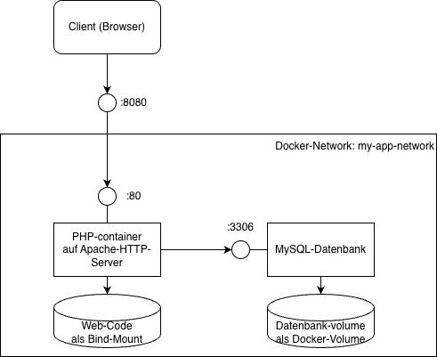

{% extends "../_base_template.html" %}
{% block title %}Lektion 11 - Orchestrierung{% endblock %}

{% block sections %}
<section data-markdown>
<textarea data-template>
# <i class="fas fa-graduation-cap"></i> M347 - Dienste orchestrieren

## Heutiges Ziel

* Sie wissen, was "Container-Orchestrierung" bedeutet
* Sie kennen `docker compose` als Container-Orchestrier-Werkzeug
* Sie können eigene Container-Dienste mittels Compose-Files zusammen konfigurieren

</textarea>
</section>


<!-- ----------------------------------------------------------------------------- -->
<section data-markdown>
<textarea data-template>
# <i class="fas fa-graduation-cap"></i> Dienste-Management

Sie wissen nun bereits, wie Sie Container-Images in Betrieb nehmen, wie Sie eigene Container-Images bauen, konfigurieren und starten können.

Rufen wir uns nochmals in Erinnerung, was Sie alles tun müssen, um einen Dienst, bestehend aus zwei Containern (PHP-Webserver, Datenbank)
zum Laufen zu bringen:

<div class="d-flex gap-10 align-items-start">

<div class="fragment">

* Docker-Image für PHP bauen / ziehen (`docker build ...` )
* Docker-Image für MySQL bauen / ziehen (`docker build ...` )
* Docker-Network erstellen (`docker network create ...`)
* Docker Volume(s) erstellen (`docker volume create ...`)
* Container für PHP erstellen / starten (`docker run ....`)
* Container für MySQL erstellen / starten (`docker run ....`)
* .... ev. noch mehr?

**Puh! Das ist ganz schön viel Arbeit!**

<i class="far fa-hand-point-right"></i> Was hat dieses Vorgehen für ein Problem?

<div class="fragment">

Es fehlt die **Nachvollziehbarkeit** und die **Dokumentation**:

* Die Nutzenden müssen all diese Kommandos minutiös nachstellen
* Sie müssen dies minutiös dokumentieren
* .... und die Dokumentation nachführen
* Das Vorgehen ist komplex, kompliziert, fehleranfällig
</div>


</div>
</div>

</textarea>
</section>

<!-- ----------------------------------------------------------------------------- -->
<section data-markdown>
<textarea data-template>
# <i class="fas fa-graduation-cap"></i> Dienste-Management: Orchestrierung

Es wäre doch schön, wenn wir diesen Vorgang, also das Konfigurieren und Starten all userer Dienste, automatisieren könnten!

## To the rescue: Docker Compose!

Mit [Docker Compose](https://docs.docker.com/compose/features-uses/) stellt uns Docker genau ein solches Werkzeug zur Verfügung:

Wir können als Entwickler mittels eines Konfigurationsfiles genau definieren:

* wie Images gebaut werden müssen
* wie Container gestartet werden
* wie Volumes konfiuguriert werden
* welche Dienste mit welchen Networks zusammengehängt werden
* welche Ports exponiert werden
* welche Dienste von welchen anderen abhängen
* ... und noch vieles mehr!

am Schluss reicht dann ein eifaches Kommando, um alle Dienste "nach Vorschrift" hochzufahren:

```
docker compose up -d
```

<i class="far fa-hand-point-right"></i> Wie genau dies funktioniert, schauen wir uns nun an.

</textarea>
</section>

<!-- ----------------------------------------------------------------------------- -->
<section data-markdown>
<textarea data-template>
# <i class="fas fa-graduation-cap"></i> Dienste-Management: docker-compose.yaml

`docker compose` benötigt ein Konfigurationsfile im [YAML](https://de.wikipedia.org/wiki/YAML)-Format, standardmässig `docker-compose.yaml` genannt.

Ein Beispiel eines compose-yaml-File sieht etwa so aus (von der Dokumentationsseite https://docs.docker.com/compose/features-uses/):

```yaml
# Definition der einzelnen Services / Containers:
services:
  # Service "web", definiert einen web-Server-Service
  web:
    # Image anhand Dockerfile-Pfad builden: Hier:
    # Dockerfile ist im aktuellen Verzeichnis ("."):
    build: .
    ports:
      - "8000:5000"
    volumes:
      - .:/code
    depends_on:
      - db
  # service "db", definert eine relationale Datenbank
  db:
    image: mysql
    environment:
      MYSQL_ROOT_PASSWORD: test
    volumes:
      - dbdata:/var/lib/mysql
    

# Definition von Volumes:
volumes:
  dbdata: {}
```

Dies ist ein compose-File für zwei fiktive Services, "web" und "db", welche mittels docker-compose zusammen
gestartet werden können.

**In dieser Unterrichts-Einheit eignen Sie sich das Wissen rund um docker compose selbständig an!**

</textarea>
</section>

<!-- ----------------------------------------------------------------------------- -->
<section data-markdown>
<textarea data-template>
# <i class="fas fa-graduation-cap"></i> Selbsorganisiertes Lernen

### Ziel

* **Heute**: Sie wissen, wie Sie mittels `docker compose` und einem `docker-compose.yaml`
  ein eifaches Dienst-Combo, bestehend aus 2 Diensten, konfigurieren. Sie haben die heutige Aufgabe verstanden und umgesetzt.

* **nächste 2 Einheiten**: Mini-Projekt für eigenen Dienst: Sie entwickeln in Eigenregie einen Dienst aus mehreren Containern und
  "orchestrieren" ihn mit `docker compose`.
  * Aufbau eines eigenen Dienstes in 2 Unterrichtseinheiten
  * gegenseitige Vorstellung / Demo der Dienste am Schluss

Dabei organisieren Sie sich selbständig, um sich das notwendige Wissen anzueignen. Ich statte Sie mit den notwendigen Pointern zu
Inhalten aus, das Wissen eignen Sie sich während der Umsetzung selbständig an.

**Die detaillierten Aufgabenstellungen dazu finden Sie auf Moodle (Woche 11, 12, 13)**.

<i class="far fa-hand-point-right"></i> Am Schluss der Lektionen machen wir jeweils ein ganz kurzes Review / Stand der Dinge.

</textarea>
</section>

{% endblock %}
